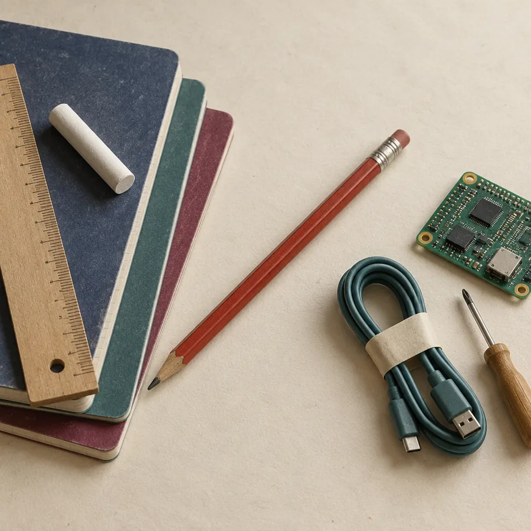

Über mich
Technik verstehen.
Wissen vermitteln.
Ich bin Armin Fradler. Ich begleite Bildungsorganisationen und Teams beim Umgang mit KI – und ich unterrichte selbst, an der Volkshochschule, am BFI und an einer Mittelschule.
 Oberwart, Burgenland
Oberwart, BurgenlandWoher ich komme
Unterrichtet habe ich unter anderem Mathematik, Digitale Grundbildung, Angewandte Informatik und Geografie. Was ich dabei immer wieder lerne: Menschen lernen am meisten, wenn sie selbst etwas tun – und wenn jemand ihre Fragen ernst nimmt.
Gleichzeitig arbeite ich seit Jahren täglich mit KI und baue damit auch kleine Werkzeuge für Organisationen. Das hilft beim Einordnen: was hinter den Schlagzeilen steckt und was im Alltag wirklich trägt.
Ich spreche beide Sprachen: die der IT und die des Kurs- und Büroalltags. Oft übersetze ich zwischen beiden, damit aus einer Idee etwas wird, das im Haus auch funktioniert.

Mit KI erstellt (gpt-image-2.5-sunburst, 10/2026)Was ich mitbringe
Pädagogik
Ich erkläre ohne Fachchinesisch und plane so, dass Erwachsene mit wenig Zeit und vielen Fragen selbst ins Tun kommen.
Selbst ausprobiert
Ich teste neue Werkzeuge selbst, bevor ich darüber spreche. Was ich empfehle, habe ich im eigenen Alltag erlebt.
Klarheit statt Hype
Kein Weltuntergang, keine Heilsversprechen. Ich benenne Chancen und Grenzen – auch wenn die ehrliche Antwort lautet: Das brauchen Sie nicht.
Ergebnisse
Meine Workshops sind so gebaut, dass am Ende etwas Brauchbares in der Hand liegt. Digital begleitet, datensparsam, ohne Konto.
Meine Haltung
Erst verstehen, dann einsetzen
Die größte Schwierigkeit im Umgang mit KI ist selten die Technik. Es ist die fehlende Einordnung: Wofür ist dieses Werkzeug gedacht, wo täuscht es, und welche Verantwortung bleibt bei uns Menschen?
Deshalb beginne ich nicht mit Tools, sondern mit einer Frage: Wo lassen wir uns Arbeit abnehmen – und wo das Denken? KI kann Arbeit abnehmen und Denken anregen. Urteilen, entscheiden und verantworten bleiben bei uns. Und wer prüfen will, muss es auch selbst können.
Links, was wir abgeben. Rechts bleibt der Stift.
KI ist weder Wundermittel noch Bedrohung. Sie ist ein Werkzeug, das man verstehen muss, um es gut zu nutzen.
Lernen wir uns kennen
Ein kurzes Gespräch reicht meist, um zu sehen, ob und wie ich Ihnen helfen kann.
Schreiben Sie mir →